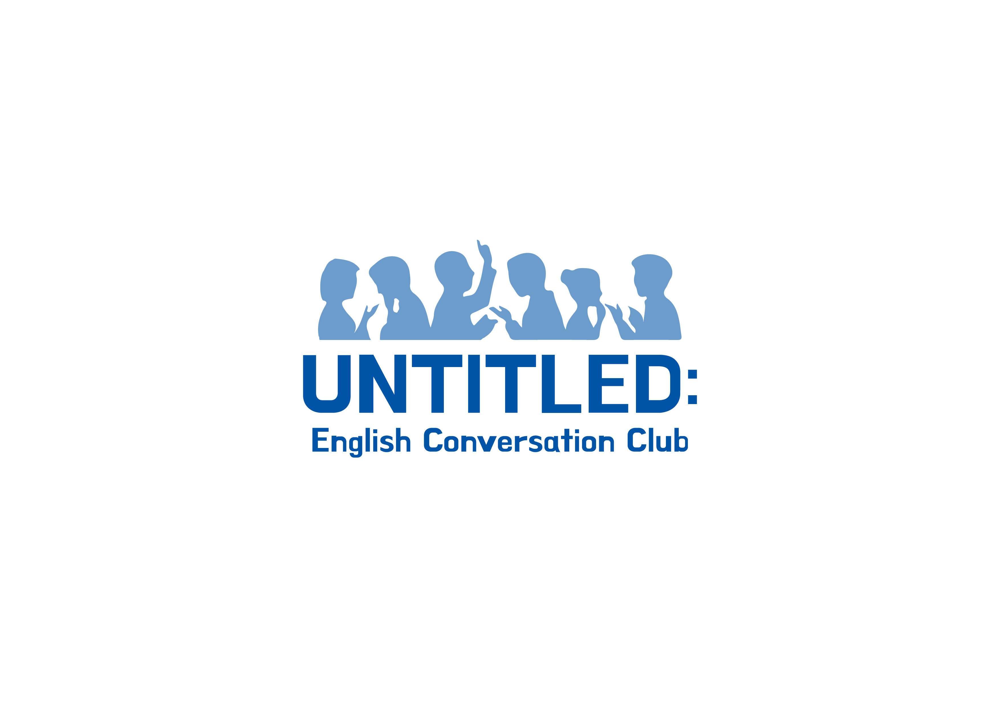

Untitled:는 2017년 9월 경희대학교에서 시작된 영어회화 동아리이다.
2018년 9월부터 대학생연합동아리로 탈바꿈하여 활동을 이어가고 있다.
영어로도 재밌는 수다를 떨 수 있다는 목표 아래 다양한 활동으로 영어 말하기를 즐기고자 노력한다.
공식 인스타그램 계정 @untitled_univ
공식 페이스북 페이지 공식 페이스북 페이지
2017.09 경희대학교 영어회화소모임 Untitled: 1기 창립
2018.03 경희대학교 영어회화소모임 Untitled: 2기 운영 (확장 운영)
2018.09 대학생연합 영어회화동아리 Untitled: 3기 출범 (연합동아리화)
2019.03 대학생연합 영어회화동아리 Untitled: 4기 활동 예정